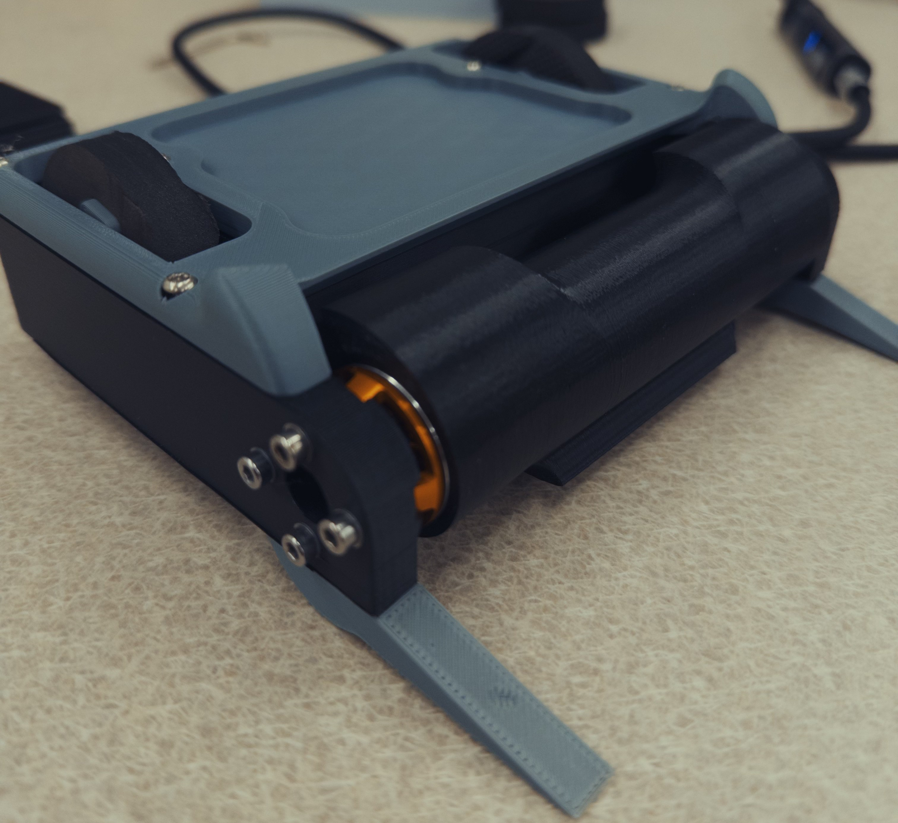
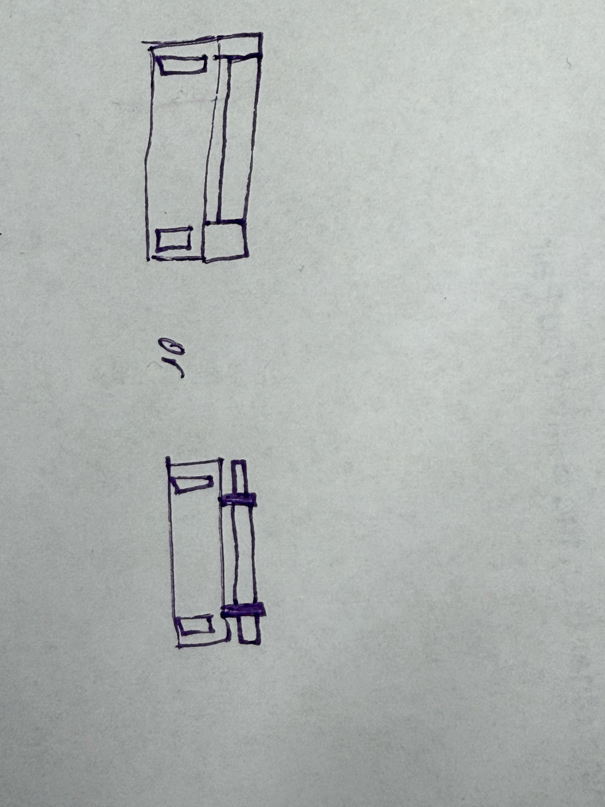
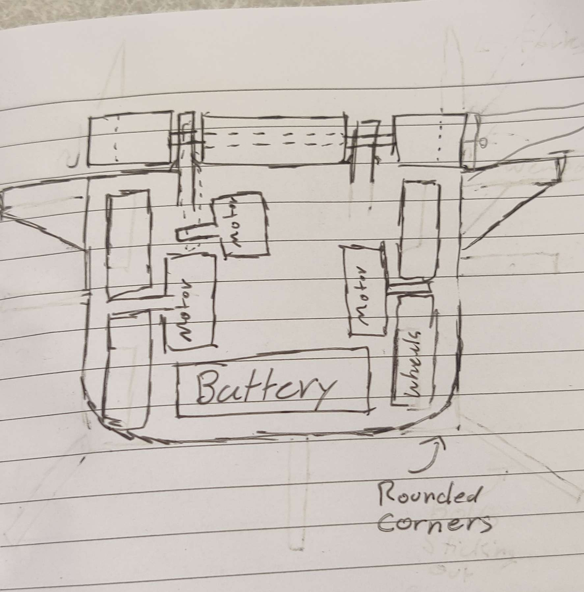
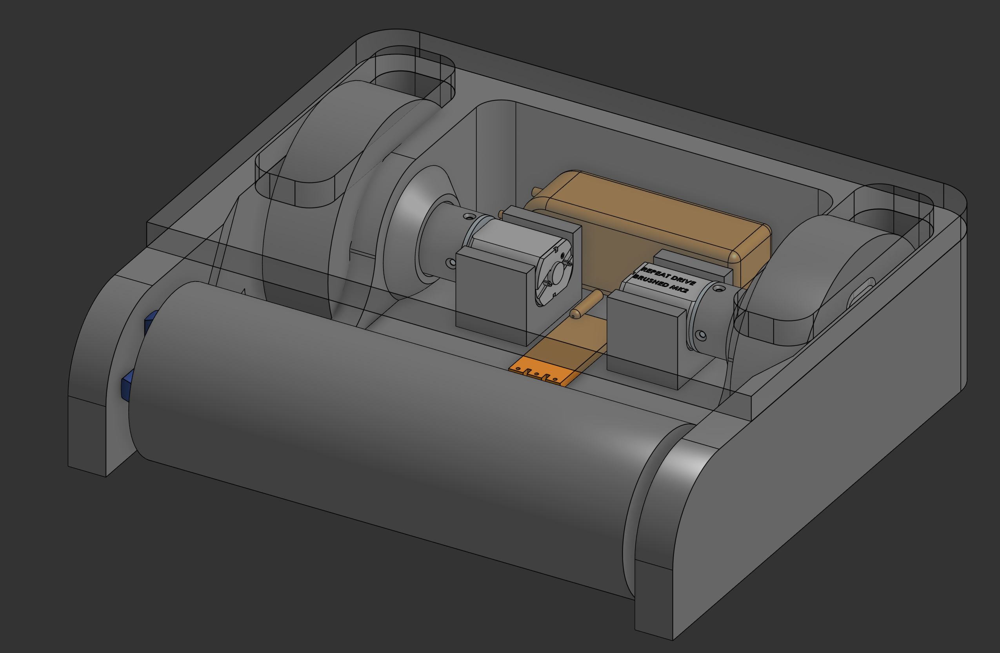
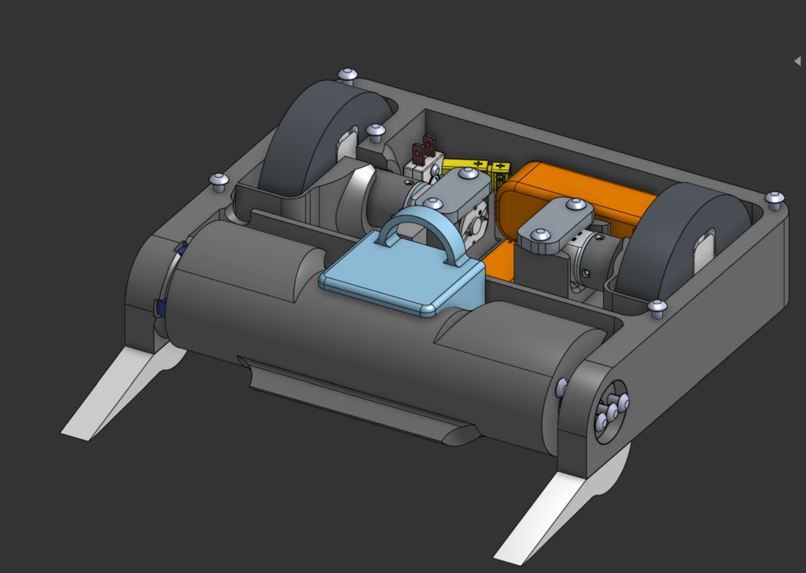
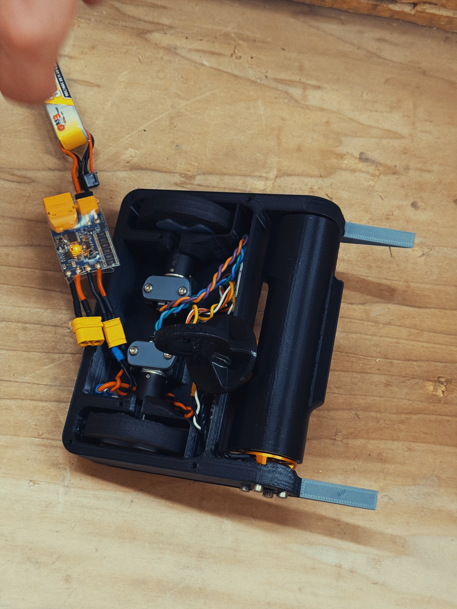
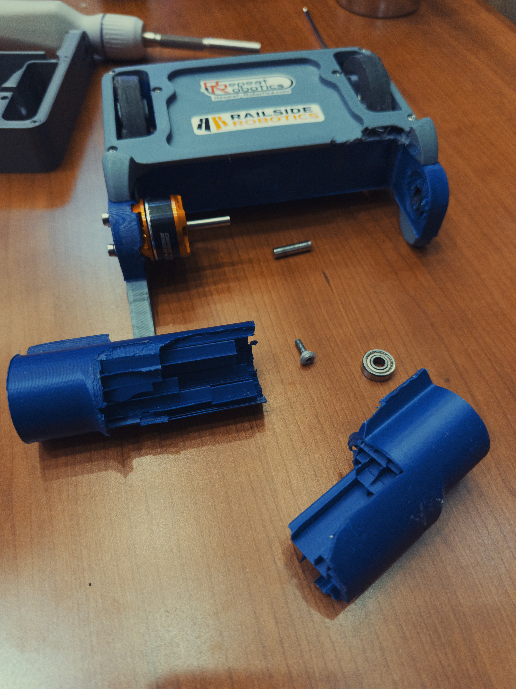

Railside Robotics · It Passed Inspection
An invertible robot built around a drum weapon
Our three-person team built and entered a compact combat robot in Railside Robotics' first onboarding competition. I helped design the chassis, drum, and front forks, developing the concept from sketches into a CAD assembly and physical prototype.
- Role
- Mechanical design: chassis, drum, and front forks
- Team
- It Passed Inspection · 3 members
- Program
- Railside Robotics onboarding competition
- Stage
- Entered two competitions; drum redesign delayed

01
Designing for either orientation
The robot was designed to keep driving even after it flipped over.
At our first meeting, we explored possible layouts and formed our three-person team. Wheel placement let the robot drive upside down, while the drum weapon gave the design its central mechanical challenge.
02
Early concepts
Planning the layout


The team moved from broad shape exploration to a layout sketch that called out the major components. It proposed a central drum with two smaller drums at the sides, alongside the battery, wheels, and electronics.
I missed this planning meeting, so my teammates created the initial layout. It gave us a starting point as I joined the chassis, drum, and fork design work in CAD.
03
Mechanical design
From the first model to a full assembly

During the third meeting, we started the first Onshape iteration. I helped design the chassis, drum, and front forks, while the team developed the frame and wheel layout together.
I mounted the drum to its planned motor and mated the assembly to the frame. Checking that it could rotate in the model gave us an early integration check before moving to the physical build.

This later model shows how the major parts came together around the drum. Reviewing the assembly as a whole helped us see the relationship between the weapon, chassis, drive components, and forks before working with the physical robot.
04
Competition test
A direct hit exposed the weak point


After the second match at the first onboarding competition, an opponent hit the center of the drum head-on and split it in half. The robot's weapon became its weak point, even though the chassis withstood repeated hits and stayed in service across multiple matches.
The team did not have an on-site 3D printer, so we could not replace or revise the drum during that competition. In one match, we came close to a win through control points, but the weapon failure continued to limit the robot.
05
Results and next iteration
The first competition showed that the chassis could take repeated impacts, but the drum needed to survive direct hits.
We lost our matches after the drum failed. For the second onboarding competition, we requested a stronger replacement drum, but long print queues and no on-site printer meant it was not ready in time. We competed with the remaining copies of the original design. The chassis and plates held up again, but another direct hit split the drum. Across both competitions, the chassis proved durable while the weapon remained the limiting component.